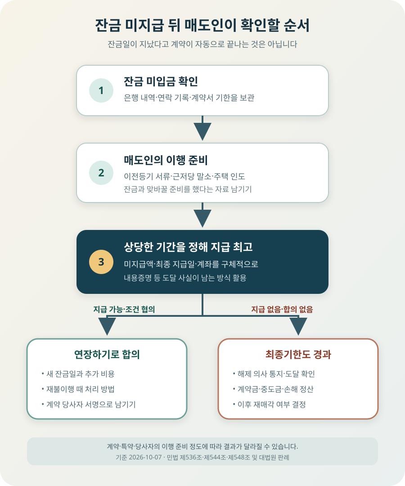

아파트 잔금일에 매수인이 잔금을 못 보내면 계약금을 바로 몰수할 수 있을까?
매수인이 잔금일에 돈을 보내지 않았다는 사실만으로 계약이 언제나 자동 해제되고 계약금이 즉시 매도인 소유로 확정되는 것은 아닙니다. 아파트 매매의 잔금 지급과 소유권이전등기 서류 교부·주택 인도는 보통 서로 맞바꾸는 의무입니다. 매도인은 자신의 이전·인도 준비를 갖춘 뒤 그 사실을 알리고, 상당한 기간을 정해 잔금 지급을 요구해야 합니다. 그 기간에도 이행하지 않으면 계약서와 법에 맞춰 해제를 통지합니다. 매수인이 연장을 요청하면 새 잔금일, 지연 비용, 해제 조건을 서면으로 확정하세요.
잔금일이 지나면 계약이 자동으로 끝날까?
매매계약서에는 흔히 “매수인이 잔금을 지급하지 않으면 상대방은 서면으로 최고하고 계약을 해제할 수 있다”는 조항이 들어갑니다. 여기서 최고는 상대방에게 일정한 기한까지 약속을 이행하라고 요구하는 통지입니다. 잔금일 오전에 돈이 들어오지 않았다는 이유만으로 매도인이 그날 오후 다른 사람과 바로 계약하거나, 계약금을 써도 안전하다는 뜻은 아닙니다.
민법 제536조는 쌍방이 서로 의무를 부담하는 계약에서 상대방이 이행을 제공할 때까지 자기 의무의 이행을 거절할 수 있도록 정합니다. 아파트 매매에서는 매수인의 잔금 지급과 매도인의 소유권이전등기 서류 교부가 통상 동시이행 관계입니다. 집을 비워 인도하기로 했다면 인도 준비도 함께 문제 됩니다.
대법원 판결도 잔금일까지 돈을 못 내면 계약이 자동으로 해제된다는 취지의 약정이 있더라도, 특별한 사정이 없는 한 매도인이 자기 의무를 이행하거나 이행할 준비를 제공해 매수인을 이행지체에 빠뜨리지 않았다면 날짜가 지났다는 사실만으로 계약이 자동 해제된다고 볼 수 없다고 설명합니다.
매도인은 무엇을 준비해야 할까?
매수인의 채무불이행을 이유로 계약을 끝내려는 매도인은 “나는 받을 준비만 했다”고 말하기보다 자신이 넘겨줄 준비를 구체적으로 갖춰야 합니다. 일반적인 개인 간 아파트 매매라면 법무사와 잔금 장소·시간을 정하고, 소유권이전등기에 필요한 원본 서류와 인감도장을 준비하며, 근저당권이 있다면 상환·말소 절차를 맞춥니다. 잔금과 동시에 집을 넘기기로 했다면 거주자 퇴거, 열쇠와 출입수단, 시설 인도도 준비합니다.
| 확인 대상 | 매도인이 준비할 내용 | 남길 기록 |
|---|---|---|
| 이전등기 | 등기필정보, 매도용 인감증명서, 인감도장 등 담당 법무사가 안내한 서류 | 서류 목록, 법무사 확인, 잔금 장소·시간 |
| 근저당 말소 | 대출 상환액, 은행 수령계좌, 말소서류 수령·접수 계획 | 은행 상환 안내와 법무사의 동시접수 계획 |
| 주택 인도 | 퇴거 완료, 열쇠·공동현관 카드, 옵션과 비품, 계량기 확인 | 빈집 사진, 인도 목록, 관리비 정산서 |
| 세금·신고 | 부동산거래신고와 필요한 확인자료, 매도자 본인 확인 | 신고필증과 당사자 확인 내역 |
모든 서류를 매수인 손에 미리 넘겨야만 이행 제공이 되는 것은 아닙니다. 매수인이 잔금도 준비하지 않은 채 연락을 피한다면 매도인에게 형식적인 행동을 끝없이 요구하는 것도 맞지 않습니다. 다만 최소한 필요한 서류와 절차를 갖추고, 잔금과 동시에 넘길 의사가 있다는 사실을 매수인이 알 수 있게 해야 합니다.
대법원 2007다4196 판결은 매도인이 매도용 인감증명서, 등기권리증, 인감도장 등을 준비하고 정해진 장소에 나가 잔금과 서류를 맞바꾸려 한 사정을 확인했습니다. 다른 판결은 매수인이 서류를 받을 준비조차 하지 않은 구체적 상황에서는 매도인이 그에 상응하는 정도의 준비를 갖추면 된다고 봅니다. 필요한 준비 정도는 거래와 상대방의 태도에 따라 달라질 수 있습니다.

언제까지 지급하라고 어떻게 알려야 할까?
민법 제544조는 당사자 한쪽이 채무를 이행하지 않을 때 상대방이 상당한 기간을 정해 이행을 최고하고, 그 기간에도 이행하지 않으면 계약을 해제할 수 있도록 합니다. 법에 모든 부동산 거래에 공통인 “3일”이나 “7일”이 적혀 있는 것은 아닙니다. 부족한 잔금 규모, 대출 실행과 말소 일정, 당사자가 이미 협의한 경위에 비춰 실제로 이행할 수 있는 기간인지가 중요합니다.
통지에는 감정적인 문장보다 다음 내용을 넣는 편이 낫습니다. 대상 아파트와 계약일, 원래 잔금일, 지급하지 않은 잔금 액수, 매도인이 이전등기·인도를 준비했다는 사실, 새로 정한 지급기한과 장소·계좌, 그 기한에도 이행하지 않을 때 계약을 해제하겠다는 뜻을 분명히 적습니다. 계약서가 요구하는 통지 방식도 확인합니다.
- 도달 증거 — 문자·메신저만 보내고 끝내지 말고 수신 답변, 내용증명과 배달증명 등 상대방에게 도달한 자료를 확보합니다.
- 이행 준비 증거 — 법무사에게 보낸 서류 목록, 매도용 인감증명서, 대출 말소 안내, 빈집·열쇠 준비 사진을 보관합니다.
- 금액과 기한 — “빨리 보내라” 대신 미지급액, 지급할 최종 날짜와 시간을 특정합니다.
- 해제 의사 — 최고와 동시에 조건부 해제 의사를 적을지, 기한 경과 후 별도 해제 통지를 할지 계약서와 자문에 맞춰 정합니다.
상대방이 연락을 받지 않는다고 추측만 하고 새 매수인을 구하는 것은 위험합니다. 계약이 유효한 상태에서 같은 집을 다시 처분하면 기존 매수인과의 분쟁이 커질 수 있습니다. 계약 해제의 요건과 통지 도달을 확인한 뒤 다음 매매를 진행하세요.
잔금 5억원을 보내지 못한 사례
아파트 매매가 8억원, 계약금 8천만원과 중도금 2억2천만원을 이미 받았고 잔금 5억원을 10월 7일에 받기로 했다고 가정해 보겠습니다. 매도인은 근저당 상환액과 말소 절차를 은행·법무사와 맞추고 집을 비웠지만, 매수인은 대출 실행이 늦어졌다며 송금하지 않았습니다.
이때 매도인이 할 일은 통장에서 미입금을 확인한 즉시 “계약금 몰수, 계약 끝”이라고만 보내는 것이 아닙니다. 당일 약속 장소에 나갔거나 서류를 준비한 사실을 남기고, 매수인의 지연 사유와 가능한 날짜를 서면으로 받습니다. 계약을 계속할 의사가 없다면 상당한 기간을 정한 잔금 지급 최고와 불이행 시 해제 의사를 계약서에 맞춰 전달합니다.
반대로 이틀 뒤 대출 실행이 확실하고 매도인도 거래를 유지하려 한다면 연장 합의를 할 수 있습니다. 새 잔금일, 지연이자 또는 실제 추가비용, 기존 근저당 이자·이사 보관비 같은 비용의 부담, 다시 지키지 않을 때의 처리, 이전등기와 열쇠 인도일을 한 문서에 적습니다. “이번 주 안에” 같은 표현은 피합니다.
최종 기한까지도 잔금이 오지 않으면 해제 통지를 하고 계약금·중도금 정산을 검토합니다. 이미 받은 3억원 전부가 자동으로 매도인 돈이 되는 것은 아닙니다. 계약금 8천만원을 위약금으로 정한 약정이 있는지, 중도금은 돌려줘야 하는지, 실제 손해와 상계할 금액이 있는지 구분해야 합니다.
며칠만 미뤄 달라고 하면?
잔금 연장은 의무가 아니라 당사자의 새 합의입니다. 매수인의 대출 실행 예정일이 구체적이고 거래를 살리는 편이 낫다고 판단하면 연장할 수 있지만, 원래 잔금일이 그냥 사라지는 것은 아닙니다. 매도인이 다음 집 잔금을 치르거나 세입자 보증금을 반환해야 한다면 연장으로 생길 자금 공백부터 계산해야 합니다.
| 연장 합의에 적을 것 | 확인할 질문 |
|---|---|
| 새 잔금일과 시간 | 대출 실행일·은행 영업시간과 이전등기 접수가 가능한가? |
| 지연 비용 | 지연이자 산식, 추가 대출이자·보관이사비 등 합의 범위가 무엇인가? |
| 매도인의 상태 유지 | 근저당·임대차 등 새 권리를 설정하지 않고 인도 상태를 유지하는가? |
| 재불이행 처리 | 새 기한에도 미지급하면 별도 최고 없이 해제되는지, 다시 통지하는지? |
| 기존 권리 보전 | 연장 합의가 손해배상·위약금 권리를 포기하는 것으로 해석되지 않는가? |
연장 대가로 큰돈을 현금으로 먼저 요구하거나, 상대방이 이해하지 못한 자동해제 문구에 급히 서명하게 하는 방식은 새 분쟁을 부를 수 있습니다. 금액이 크고 중도금까지 지급된 거래라면 변호사에게 기존 계약과 연장 합의서를 함께 보여 주는 편이 안전합니다.
계약금과 중도금은 어떻게 정산할까?
일상적으로 “계약금을 몰수한다”고 말하지만, 계약금이 어떤 역할을 하도록 약정했는지부터 봐야 합니다. 계약이 성립했음을 증명하는 돈인지, 민법 제565조의 해약금인지, 채무불이행 때 손해배상액으로 삼는 위약금인지 계약서 문구와 지급 경위를 확인합니다. 중도금 지급 뒤에는 단순 변심에 따른 해약금 해제와 채무불이행에 따른 해제를 섞어 설명하면 안 됩니다.
민법 제398조는 당사자가 손해배상액을 미리 정할 수 있고, 그 금액이 부당히 과다하면 법원이 적당히 감액할 수 있다고 정합니다. 표준적인 계약서에서 계약금 상당액을 손해배상 기준으로 정했더라도 개별 계약의 문구와 경위가 우선입니다. 실제 손해를 무조건 계약금에 더해 받을 수 있다고 단정해서도 안 됩니다.
민법 제548조에 따라 계약이 적법하게 해제되면 각 당사자에게 원상회복 문제가 생깁니다. 매도인이 받은 중도금과 잔금 일부, 매수인이 넘겨받은 점유나 서류가 있다면 각각 돌려주는 문제가 생깁니다. 위약금으로 귀속되는 범위와 반환할 돈을 구분하고, 반환액·상계액·지급일을 정산서로 남기세요.
해제 말고 잔금을 청구할 수도 있을까?
매수인이 늦었더라도 시세·다음 거래·이사 일정 때문에 계약을 유지하는 편이 나을 수 있습니다. 매도인은 무조건 해제만 해야 하는 것이 아니라 계약의 이행, 즉 잔금 지급을 청구하는 방안과 지연으로 생긴 손해를 함께 검토할 수 있습니다. 다만 잔금을 받으려면 매도인도 이전등기와 인도를 제공할 상태를 유지해야 합니다.
어느 쪽이 유리한지는 숫자로 비교해야 합니다. 새 매수인을 찾는 기간과 예상 가격, 기존 매수인에게 반환할 중도금, 다음 집 계약의 위약 위험, 대출이자·보관이사비, 소송 비용과 기간을 적어 봅니다. 계약금 8천만원을 받을 수 있을 것 같다는 이유만으로, 시세가 1억원 하락한 거래를 곧바로 해제하는 선택이 항상 유리한 것은 아닙니다.
매수인이 아예 계약을 이행하지 않겠다고 명확히 통보한 경우, 반복해서 연장만 요구하는 경우, 잔금 대부분을 곧 마련할 수 있는 경우는 대응이 달라집니다. 전화 한 번으로 확정하지 말고 매수인의 의사를 서면으로 받고, 해제와 이행청구 중 하나를 선택하기 전에 변호사에게 계약서·송금 내역·통지 기록을 보여 주세요.
매도인이 잔금일에 확인할 것
- □ 계약서의 잔금일, 해제·위약금·통지 조항과 특약을 다시 읽었다.
- □ 매수인이 보내야 할 정확한 잔금과 정산액을 확정했다.
- □ 소유권이전등기 서류와 인감도장, 본인확인 자료를 준비했다.
- □ 기존 대출 상환·근저당 말소와 법무사 접수 일정을 맞췄다.
- □ 약정대로 주택을 비우고 열쇠·시설·관리비 정산을 준비했다.
- □ 잔금 미입금 시각과 당사자 통화·메시지를 보관했다.
- □ 연장한다면 새 날짜·비용·재불이행 처리를 서면 합의했다.
- □ 해제한다면 상당한 기간의 최고와 해제 통지 도달을 확인했다.
- □ 계약금·중도금·실제 손해를 나눠 반환·상계 범위를 검토했다.
- □ 기존 계약의 해제를 확정하기 전에 새 매수인과 계약하지 않았다.
공식 자료 및 참고자료
- 국가법령정보센터 — 민법 제536조 (동시이행의 항변권)
- 국가법령정보센터 — 민법 제544조 (이행지체와 해제)
- 국가법령정보센터 — 민법 제548조 (해제의 효과와 원상회복)
- 국가법령정보센터 — 민법 제398조 (배상액의 예정)
- 국가법령정보센터 — 대법원 2022. 11. 30. 선고 2022다255126 판결
- 국가법령정보센터 — 대법원 2007. 6. 15. 선고 2007다4196 판결
- 국가법령정보센터 — 대법원 2012. 11. 29. 선고 2012다65867 판결
정보 기준일: 2026-10-07. 이 글은 개인 간 국내 주택 매매에서 매수인이 잔금을 제때 지급하지 않은 일반적인 상황을 설명한 정보이며 개별 법률 자문이 아닙니다. 자동해제 특약, 중도금 지급, 임차인 명도, 근저당 말소, 공동명의, 토지거래허가, 법인 거래와 당사자의 명확한 이행거절이 얽히면 결론이 달라질 수 있습니다. 계약 해제·재매각·지급받은 돈의 사용 전에 계약서 원문과 실제 이행 자료를 가지고 변호사에게 확인하세요.
잔금과 비용을 다시 확인하세요
- 잔금일 정산 계산기잔금과 관리비·공과금 정산액 계산
- 매매 잔금일 체크리스트서류·송금·열쇠·등기 접수 순서 확인